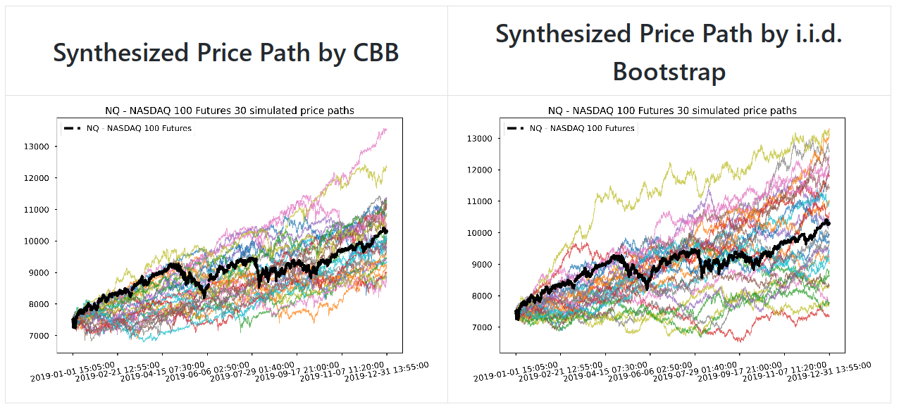

Jesse Liu
-
Build Limit Order Book
An efficient C++ implementation to build level-2 limit order book from level-3 CME market-by-order (MBO) events. -
Tardis.dev Replay Client with Live Streaming
A Python client to connect to Tardis.dev cryptocurrency market data replay server, which provides both historical data replay and live streaming of market data. It can be integrated with backtesting frameworks for strategy development and testing. -
Swing
is a Python module of automatic swing trading execution algorithm.-
Features:
- Grid-based swing trading with automatic trailing stops.
- Swing trading on pre-defined price zones, which can be determined by historical data analysis.
- Adaptive order type to reduce timing risk with modes from more passive to more aggressive, used for long/short reversal, stop loss and profit taking.
For details please visit GitHub: https://github.com/0liu/swing
Multi-Signal Portfolio Construction Lab
Mission: A daily-rebalancing, long-short-capable, multi-signal portfolio construction platform on cross-asset ETFs, with a walk-forward backtest engine and risk attribution. Signals (time-series and cross-sectional momentum, short-term reversal) under a strict point-in-time rule; EWMA and Ledoit-Wolf shrinkage covariance; equal-weight, inverse-volatility, ERC and mean-variance (long-only and long-short) optimizers behind one interface with a turnover penalty and volatility targeting; MCR/CCR risk decomposition. Every table and figure regenerates from committed data; tests and CI on GitHub Actions.
GitHub: https://github.com/0liu/portfolio-lab
Notebook: [research_walkthrough.ipynb]
Bootstrap Price Time Series
Mission: Explores time series bootstrapping methods to synthesize financial market price/return paths, which are useful for quantitative strategy development with robustness simulation and backtesting.
GitHub: https://github.com/0liu/bootstrap-price-time-series
Notebook: [Bootstrapping Price Time Series.ipynb]
